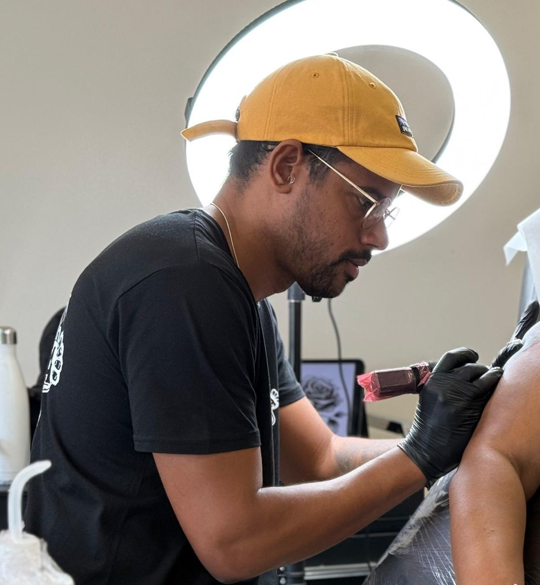

Jubi Pereira, a Brazilian tattoo artist specializing in realism, currently working in Fuerteventura, Spain. My passion is to create portraits and scenes that capture the essence and emotions of people, transforming their stories into timeless works of art. Each tattoo is a special connection that I am honored to share with my clients.